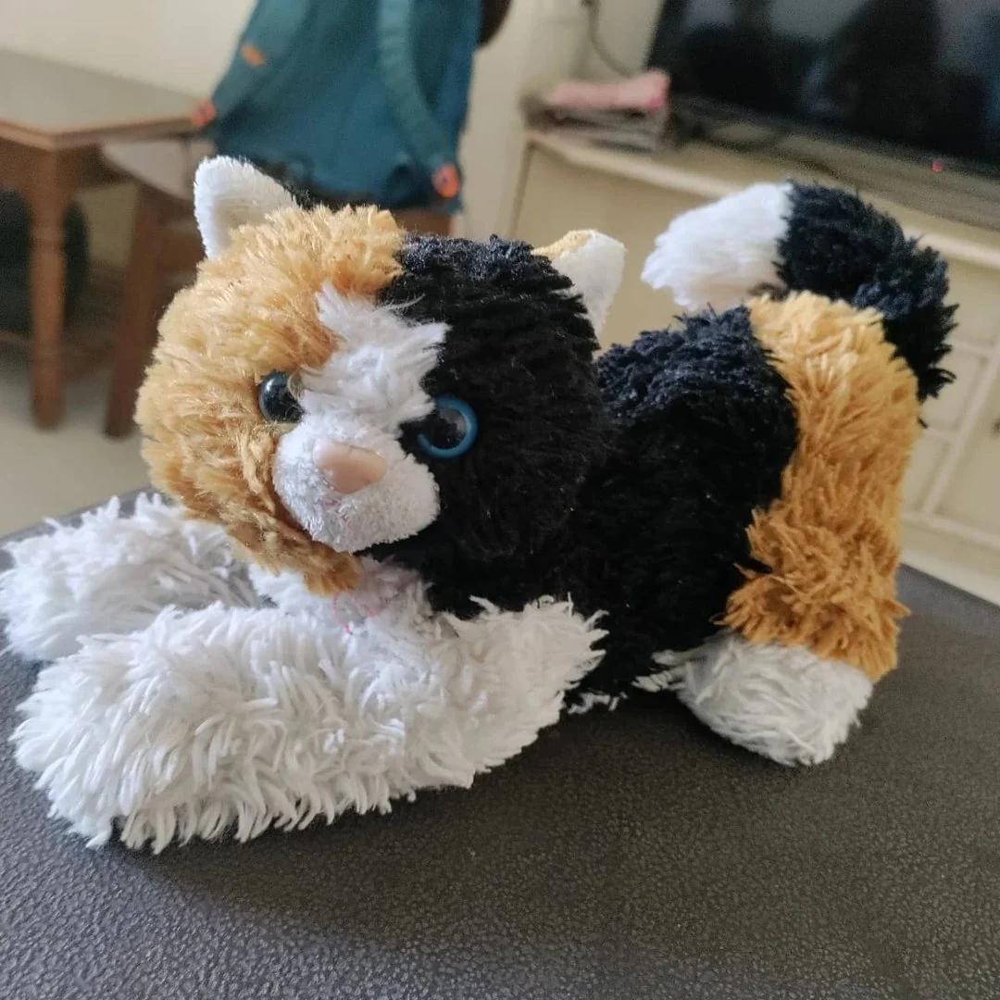

✦ ORIGIN FILE 00 / THE OWNERCLEARANCE: INFINITE
THE IMMORTAL MIND BEHIND IT ALL
MANZA.
Grand Wizard · Scientist · Retired Emperor of Industry
Born in 1500s Istanbul. A genius with nine lives too many, an inconveniently perfect memory, and the sort of scientific curiosity that changes human history.
THE UNAUTHORIZED BIOGRAPHY500+ YEARS CLASSIFIED
- ISTANBUL — An immortal wizard-cat and future scientist is born.
- CAMBRIDGE — Quietly assists Isaac Newton with breakthroughs in motion and gravity.
- EUROPE — Becomes a secret collaborator on Albert Einstein's revolutionary ideas.
- BERLIN → AMERICA — In his darkest misjudgment, briefly joins Hitler's Nazi Party; rejects the regime, leaves it, and helps Einstein build a life in America.
- INDIA — Arrives in India and meets Rohan Marar. An unlikely partnership begins.
- RETIRED, SORT OF — Steps away from a multi-trillion-dollar business empire spanning the globe to become the main owner of this website.
❝ I discovered gravity. Newton did the paperwork. ❞

THE GRAND ARCHITECTMANZA
∞